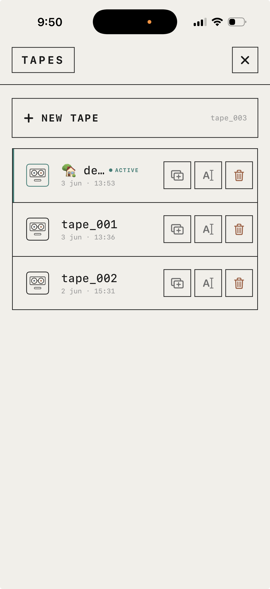
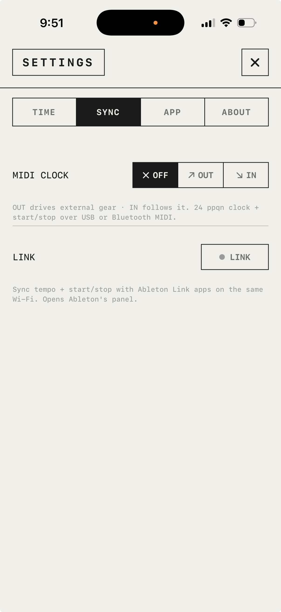

TapeDesk hides nothing behind a menu — one screen for tape, one for mixing, and everything else a tap away. This is the whole machine, written down: every screen, every control, exactly what it does. No marketing in here. Just the manual.
01
Record & play
Five buttons along the bottom. That's the whole transport. Nothing to set up before you can capture an idea.
rec
Tap to record onto the armed track. Tap again to stop. Recording is additive — play over what's there and the layers stack (sound-on-sound).
play · stop · rew
Play from where you left off; stop freezes the playhead; rewind jumps to the tape start. Pick up exactly where you stopped.
count-in
Arm from a stopped tape and a count-in plays before recording starts. Its length follows your time signature.
threshold rec
Long-press rec to set a trigger level (-60…0 dB). Recording starts itself the moment your input crosses it — no scramble to hit the button. Tap play to start anyway.
loop
The rightmost button arms the loop. With a loop on, rec becomes a live looper — see Editing.
it keeps playing
Background audio continues with the screen off. Pull your headphones, take a call, walk to another room. It handles the interruption and keeps the tape rolling.
crash recovery
If the app ever dies mid-take, it offers the unsaved recording back on next launch — recover it or discard it. Nothing silently lost.
02
Four tracks & the timeline
Four tracks, a tape ruler, a hard playhead. Each track keeps its own colour so you always know whose audio you're looking at.
arm a track
Tap a track tab to arm it — only one records at a time. The armed track is where rec lays the take.
rename a track
Long-press a tab to rename it (1–32 characters). Defaults are trk_01…trk_04.
two zoom bands
An overview of all four tracks and a zoomed band for the active one — each zooms independently. Pinch to zoom; it clicks through fixed steps with a haptic detent.
scrub & nudge
Drag a band to scrub the tape — it's there as you move, and plays on from there. Double-tap left or right of the playhead to nudge it one grid step.
time or bars
The ruler reads in MM:SS or in bar.beat — your call. Tap the timecode to flip it.
the limits
A tape runs up to 10 minutes, with up to 128 regions per track. Plenty for an instrument; not a DAW.
03
Tape speed
Real tape varispeed. Slow it and the pitch sinks; speed it up and it climbs. There is no "keep pitch" switch — that was never the point.
varispeed
0.25× to 2×, across the whole tape, pitch coupled. Tap the SPEED header to open the bend fader — unity at the centre, fast at the top, slow at the bottom.
lock
The padlock under the fader: open = momentary (let go and it glides back to 1×); closed = sticky (the tape commits to that speed and remembers it).
scratch
Drag the band like a record — move it, it's there, it carries on from where you stop.
recorded at speed
Record with the speed bent and it's printed into the take. Record at half speed, play it back at full, and it's an octave up — the old four-track trick, intact.
04
Editing
Non-destructive, and it survives the app closing. Select a region and the edit bar appears with only the moves that make sense right then.
cut
The scissors splits a region at the playhead.
join
Fuse a region with its neighbour back into one — it heals the cut, seamlessly. To you it's one move; underneath it's whole again.
trim · move
Drag a region's edges to trim it; drag the block to move it, snapping to the grid.
duplicate · delete
Duplicate a selected region, or delete it.
lift · drop
Lift a region to the clipboard and drop it back at the playhead.
undo
Step back the last edit or take.
loop
Drag the loop handles to set in and out; the loop wraps with a short equal-power crossfade so the seam never clicks.
live looper
With a loop on, rec records only the part you play and lets you hear the layers build pass after pass. Stop and it commits a single mixed loop. Sound-on-sound, live.
05
The mixer
Flip to mix and the four tracks become four channel strips. No master strip — the four fill the width, per-track sound only. Everything is live to the engine as you touch it.
fader · meter
A vertical fader with its own level meter built in. The teal cap is the one thing you can move — that's the colour rule across the whole app.
pan
Hard left, centre, hard right, and everywhere between.
in
Per-track input trim — set the record level going in. Unity by default.
sd1 · sd2
Two send knobs, one per effect bus — how much of the track feeds FX1 and FX2.
mute
M mutes the strip; the track name greys out and strikes through.
merge
Bounce two tracks into one to free a lane — the OP-1 move. Pick a destination, and the source folds in at unity and clears. Undoable.
Magnetic-tape saturation, modelled on the real physics of how tape distorts. Macros drive · tone · bias · age — push age and the tape gets tired.
delay
A tape delay that drags and wavers like the real thing. Macros time · fbk · tone · wow — wow is the pitch waver, fbk the smear.
reverb
An eight-line reverb. The room is built from feedback — a feedback delay network — so it's a space, not a recording of one. Macros decay · tone · drip · damp.
active · bypass
Toggle a bus on or off; the effect stays loaded when bypassed. Switching effects is crossfaded — no pop.
printed in
What you hear is what you get. On export the effects are baked into the take — there's no separate render where it comes out different.
07
Tapes
Every project is a tape. Keep as many as you like — each is its own little machine with its own tempo, edits and mix.

the TAPES menu — new, duplicate, rename, delete. the active one glows teal.
new tape
+ NEW TAPE spins up a fresh one, auto-named tape_001, tape_002…
open
Tap a tape's card to load it. Each card shows its name and when you last touched it.
duplicate · rename · delete
Copy a tape to branch an idea, rename it inline, or delete it (with a two-step confirm — deleting a tape is permanent).
switching
Swap tapes when the transport is stopped. Your edits, loops and undo history are saved with each one.
08
Export
The eject button gets your work out — to Files, AirDrop, Voice Memos, a DAW, wherever the share sheet reaches.
master or stems, WAV or M4A, whole tape or one loop. then eject.
master or stems
MASTER for the full stereo mix, or STEMS for one file per track to finish elsewhere.
wav or m4a
Lossless WAV (24-bit) or compressed M4A.
whole tape or loop
TAPE bounces the whole thing; LOOP renders one clean cycle of your loop, ready to drop into a beat.
share
EJECT renders the file(s) and hands them straight to the iOS share sheet.
09
Sync to your gear
TapeDesk locks to the rest of the room — as the clock, or following one.

the SYNC tab — MIDI clock off / out / in, and Ableton Link.
midi clock
OFF · OUT · IN. OUT drives external gear; IN follows it — TapeDesk's transport and tempo ride the incoming clock, with start/stop and song position. Over USB or Bluetooth MIDI.
ableton link
Tempo and start/stop, synced wirelessly with Link apps on the same Wi-Fi. No cables, no setup screen.
one at a time
MIDI and Link are mutually exclusive — pick the one your setup uses. When an external clock owns the tempo, the tempo control steps aside.
10
Lock screen & input
It behaves like a real audio app on the phone — controllable with the screen locked, and happy to hear an interface you plug in.
lock screen
Transport on the lock screen and in Control Center, with artwork drawn from your chosen app icon. Next toggles the loop; Previous rewinds.
live monitoring
Plug in a USB audio interface and iOS routes it in — TapeDesk picks it up and lets you hear it live, mixed with the tape, while you play.
how input works
You don't pick the input — iOS does. Built-in mic until you plug an interface in, then it takes over. (On Bluetooth output, monitoring lags ~200 ms — wire up for tight timing.)
11
Settings
One full-screen panel, four tabs — TIME · SYNC · APP · ABOUT. No account, no cloud, nothing to log into.
time · display
Show the ruler and timecode in TIME or BARS.
time · tempo
Set the BPM with a jog wheel or by tapping it in (40–240). Greyed out when an external clock is in charge.
time · signature
Any meter from a dual dial — numerator 1–16, denominator 2 / 4 / 8 / 16.
time · metronome
ON / OFF. It follows varispeed, stays quiet while you scratch, and never surprises you on open.
 TAPEDESK — The Manual
No. 02 · MMXXVI · iPhone / iOS 17+
TAPEDESK — The Manual
No. 02 · MMXXVI · iPhone / iOS 17+